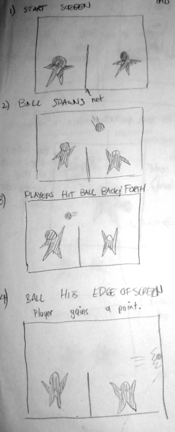
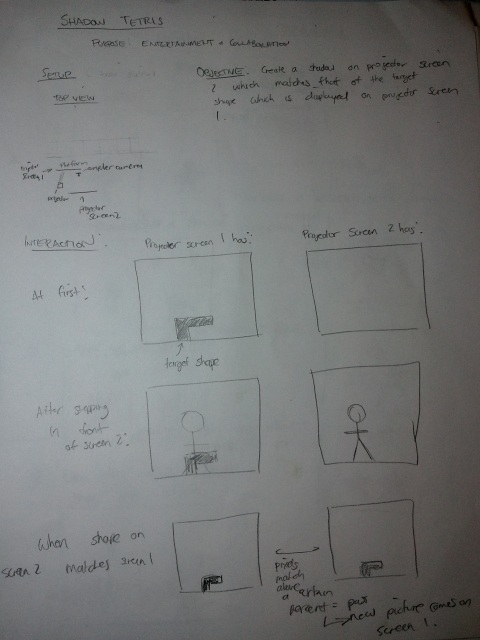
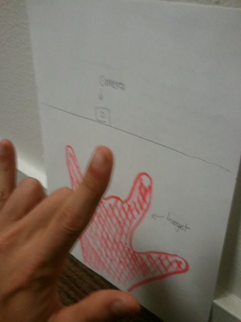
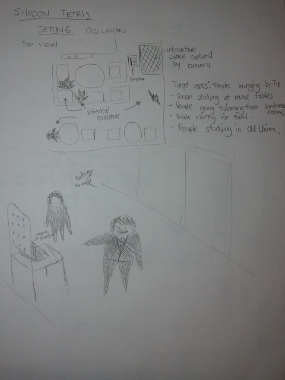
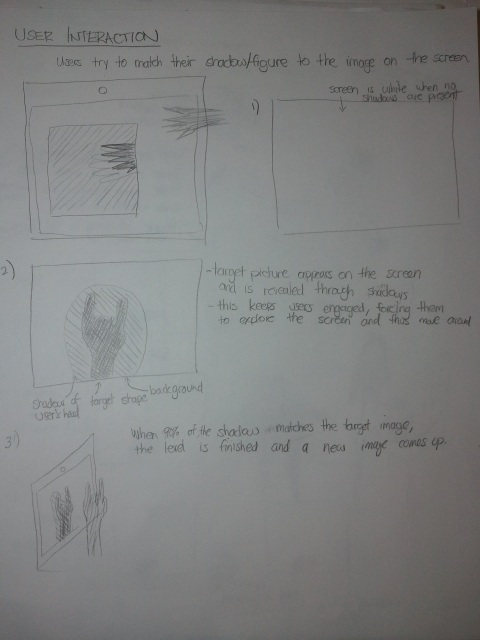

Design Flow
Exploring Public Spaces
- There are two main forms of public spaces - outdoor space and indoor space.
- Indoor spaces have walls of different colors, which might not be uniform, but it's easy to control what goes on in the background. There is less room to maneuver around, so concepts which require lots of movements might hit space constraints. However, due to these space constraints, it is also more likely for people to notice your applications. More people are trying to complete their tasks at hand, which might cause participation to suffer.
- Outdoor spaces would tend to have more noise in the background, which is difficult to control. This noise could potentially both distract potential users, and pose a technical challenge in the application. Due to these challenges, we decided to focus mostly on indoor spaces.
- We explored a number of different public spaces including:
- The gym
- Tresidder/Old Union
- The Marguerite
- White Plaza
- The Circle of Death
- A fraternity house
- The exit of a large lecture hall after class (CS 106A!)
- The Axe and Palm
- A dorm lounge
- The Palo Alto Caltrain Station
- We noticed that many of these spaces were waiting areas, or transition areas. Next, we brainstormed some user needs including:
- entertainment
- want to meet others and interact
- want to kill time
- feel awkward approaching others
- need to stay near location where what they're waiting for arrives
- low barrier of entry/exit (might need to leave with little warning)
- We ultimately decided to focus on Old Union/Tresidder, because we felt that this public space had the most to offer. Compared to the other locations, potential users were more likely to casually loiter in these spaces for a longer period of time, either when waiting for food, friends, etc. In some locations that we originally considered, passerbys would likely be in-transit to their next location (circle of death, White Plaza, lecture hall, etc.), and would thus be unlikely to stop and use our design unless they had no subsequent tasks to complete or places to be. In other locations, such as the gym, passerbys would likely already have an action/goal in mind (to exercise, for example) and would be less likely to stop and interact with a system set up near or in it.
Brainstorming Designs
During brainstorming, we tried to consider a wide variety of designs. First, we started by verbally throwing out as many different ideas as possible, seeking to explore different types of interaction. Then, we built upon and refined each other's ideas until we felt we had a good number of potential designs to work with. A portion of the initial notes which were transcribed can be found here. After, we approached our initially brainstormed ideas and shaped them into more concrete applications, moulding them through more discussion and sketching out some basic prototypes. Not all ideas were expanded on further, because at this point, we started to somewhat consider realistic technical limitations, aiming to look at projects we could actually develop.
Shadow Volleyball
In this design, two or more participants play an interactive game of shadow volleyball. The volleyball spawns above the net, moving towards a random side, when one or more shadows are detected on each side of the screen. The volleyball will drop towards the bottom of the screen at a certain pace, simulating gravitational pull. When the volleyball comes into contact with a shadow, it will change direction and move in the direction the average point in the shadow was moving prior to contact. If the ball hits either the side or bottom of the screen, the opponent of the last team to touch the ball gains a point. The objective of this design is to play a game of shadow volleyball, amassing a greater number of points than your opponent(s).
- 
The basic flow of the shadow volleyball game

The physical setup of the game
Colliding Shapes
In this design, Each separate shadow is randomly assigned a different color shadow on the display. When people's shadows collide, their colors are changed in one of the following ways:
- the color which is created when the two originals are mixed together
- colors are swapped
- a random color is picked again for both
- the smaller shadow takes the color of the larger one

The original brainstorming sketch for colliding shapes, depicting the setup and what happens during interactions.
This design is visually stimulating, and allows for passive interactions, potentially drawing in curious passerbys for a glimpse. However, it does not necessarily engage users, and may be technically difficult to build. Any sort of movement in the background could potentially cause issues as well.
Whitespace Enclosure
Whenever a shadow encloses a whitespace (nonshadow), the whitespace becomes animated. We explored a number of different animation scenarios including:
- becoming a randomly colored bubble which floats towards the top of the screen and pops when it hits a shadow or edge of the screen
- becoming a bubble which is like a beach volleyball and you can hit up into the air
- exploding into a number of randomly colored pieces

The original brainstorming sketch for whitespace enclosure.
Shadow Booth
This design would function similarly to a photobooth, but capture shadows instead of images. As envisioned, this design would track important nodes of each person (ex. head, major joints, etc.), and provide the ability to afix certain props to corresponding nodes (such as a hat on the head, a sword in the hand, etc.).

The original brainstorming sketch for shadow booth
Upon further discussion, we figured that this application doesn't really attract that much attention from afar, and would potentially just turn into a novel version of Apple's Photobooth software - not exactly something designed for a public space. It tends to facilitate more of a up close and personal interaction, that might be more reserved for a private space.
Platformer
This game is a spin on your traditional sidescrolling platformer game. In this game, the objective is to successfully navigate the avatar from one side of the screen to the other. The avatar continuously moves in one direction until it hits the wall. During initial iterations of this design, one would have to successfully navigate the avatar, which started on the top left hand corner of the screen, to the right edge of the screen. The avatar was subjected to gravity, and would move a certain distance left on the screen after a small period of time. During each movement, it would drop onto the next shadow which was below where it moved to, and drop off the screen if no shadow was present. The avatar was not able to jump, and could only move down and left, automatically.

The original brainstorming sketch for the platformer
Further brainstorming led to the concept of levels, where each stage consisted of a number of obstacles imposed upon the board, which the avatar could not collide with. The avatar could now move back across the screen after hitting an edge, if it is not at the goal (usually located on the lower right hand side). Stage setups could potentially force the user to navigate across the screen multiple times to finish a level, moving the avatar progressively lower as the stage is completed.
This game encourages interaction between participants to create the game, as it is easier to maintain shadow shapes with more than one user. One user can't really span his shadow across the entire screen unless he is positioned extremely close to the camera. This game would also be pretty explanatory, and is intuitive to learn. However, without shadows, it would be quite a repetitive experience.
Design Sketches
Shadow Tetris - This Origins of this Project
- high scores with name inputs
- points for difficulty of each image
- take your own picture and save for someone else to use
- moving shapes (follow the shape across the screen, for example)
- limited timed modes
During the brainstorming process, the idea to use two cameras and capture two people's shadows was thrown out. This lead to the development of an idea where the two users could not see each other, and had to match each other's shadows within a certain percent to get a congratulatory message and unlock an achievement. However, we had trouble getting past the technical difficulty of running the program with two cameras, so we sought to explore other possible paths. Recalling the Japanese gameshow "Human Tetris", or "Nōkabe" in Japanese, we evolved our original idea into something more technically feasible. We decided to create a shadow-matching application, inspired by Human Tetris, where users would have to position themselves such that they and their shadow fill in the correct shape for the level at hand.
The original brainstorming sketch for shadow tetris.
A physical mockup of ther interface, depicting what a user should do.
At first, we decided to use all tetris shapes, in the spirit of original game, but we soon came to realize that shadows with right angle corners are extremely difficult for humans to emulate. Thus, we ended up using a mix of human hands/human figures in our final target picture selection. Since this project was to be run in Old Union or Tresidder, we tried to find a space which would get a lot of foot traffic, but not be somewhere that people would only go to enroute to somewhere else. After exploring Tresidder, where there were not really any adequete spaces, and people tended to be spread further apart, we visited Old Union. When we got to Old Union, we noticed a mix of people who were lounging around, either on the couches, watching TV or waiting for food, doing homework on the couches or at one of the tables, or walking through the area to visit one of the conference rooms. We also noticed that there often tended to be groups of people who stopped and chatted with friends that they saw who were working in the area.
The setting for shadow tetris, in the lounge area of Old Union's first floor.
Thus, we decided to set up our application at an intersection near a group of couches, that were set up facing a TV. This area was one where students were often found just idling, waiting for friends to show up for meetings, or procrastinating doing that large homework assignment which is due tomorrow. However, it was also on the way to a number of conference rooms, and in the corridor which led from The Axe and Palm into Old Union, which meant that many people would come by. The computer was also set up on the way from most of the conference rooms to the rest room, which meant that passerbys could stop by for a quick breather and distract themselves for a bit.
For the actual interface, in our original brainstorming, we just had the target shape imposed on the screen. However, we realized that it was impossible to see where your hand was if all you saw was the target image. Thus, we decided to use the Rose Bowl example, and superimpose the shadow onto the target image, letting our users know what kind of target shape they're trying to create. We decided to hide the target and allow the user to explore the entire screen to figure out what shape they had to do to facilitate collaboration between different users.
How a user interacts with the interface
Another way we explored facilitating interactions was to create targets which required more than one user to complete. This would force participants to grab their friends later in the game, when they reached a level that had two hands on the opposite side of the screen, or two sillhouettes onscreen. We also decided to create a variety of different target images which the participants would cycle through, to increase the amount of different things they become exposed to. We decided that in the aforementioned setting, our typical users would have something to do in the close future, but could spare a quick break. Thus, we decided that our game should engage the user for a short to medium length period of time. Thus, since people get bored when faced with the same things in repetition, we explored the possibility of creating a variety of increasingly more difficult targets which sought to capture the user's attention. When 90% of the shadow matches the target image, then the next image is displayed. This number was developed through trial and error when testing our project.
The percent matched tracker was added at the top of the screen to let players know how close they are to matching the target. This is very helpful in situations where the user feels like he has the correct pose, but the program tells him he's not quite there yet. It allows these situations to be quantified, conditioning the player's expectations and actions.
Thoughts about the futureGiven more time, there is a number of things that we would like to try implementing, including but not limited to:
Obstacle Course - An Alternate Idea
The obstacle course idea originally came from the hurdles races in track and field. In our original version of the application, we wanted to create an interactive experience where users would walk across the screen, trying not to hit an obstacles which are present on the screen. We brainstormed a number of different patterns which the user would encounter, forcing them to do some creative maneuvering to pass the level. Having a number of levels allowed us to capture users' attention for a longer period of time, keeping them entertained. We figured that a program like this could lead to conditioning similar to the video Scott Snibbe showed, where participants would walk under a virtual shower, and start repeating actual showering behavior. In this case, we predicted that users would see the obstacle, and once some people started trying to avoid the on screen obstacles, others would follow, because the avoidance is a simple, mindless task.

Creating an obstacle course
However, this particular arrangement would not capture the user's attention for an extended period of time, and it seemed unlikely that a user would repeatedly walk from one side of the screen to another. Thus, we explored other ways that we could capture attention through building on this idea.

More iterations: Some brainstorming on how we could improve this concept
This exploration led us to the idea of having the background move horizontally instead of having the user walk through the scene. This allowed us to operate the application in a smaller space, and allowed users to interact with the program for a longer period of time. Additionally, we explored the idea of overlaying the user's position onto the screen, allowing the user to control his cues via looking at the laptop screen isntead of looking at what's projected.
We ended up not going with this idea because it was technically hard to implement. For it to work properly, we would have to prevent ambient shadows somehow, and detect where the user's shadow was relative to his body to prevent the shadow from landing on the obstacle. Also, this system is a solitary game, which did nothing to facilitate interaction with other users. Instead, prospective users would have to be a spectator, waiting their turn if they were interested.
Musical Applications - An Alternate Idea